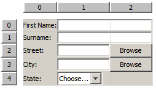
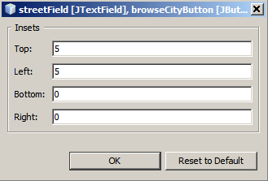

Apache NetBeans
Apache NetBeansLatest release
GridBagカスタマイザを使用した基本的なJavaフォームのデザイン
| This tutorial needs a review. You can open a JIRA issue, or edit it in GitHub following these contribution guidelines. |
執筆: Jan Stola、Tomas Pavek、およびAlyona Stashkova
このチュートリアルは、NetBeans IDE GridBagカスタマイザの基本的な機能を使用して単純なJavaフォームをデザインする方法を示す2部構成シリーズの第1部です。 このシリーズは、レイアウトのコードを手動で記述することなくGUIコンポーネントをレイアウトした後、プロジェクトに必要な特定のターゲット・レイアウトを実装するために既存のフォーム内の追加の変更を実行する方法を示すためのガイドとして作成されています。
このシリーズの各ドキュメントでは、特定の機能セットについて説明します。
-
第1部: GridBagカスタマイザを使用した基本的なJavaフォームのデザイン

Figure 1. このページの内容は、NetBeans IDE 7.1以降に適用されます
このチュートリアルに従うには、次に示すソフトウェアとリソースが必要です。
| ソフトウェアまたはリソース | 必須バージョン |
|---|---|
7.1以降 |
|
バージョン6、7または8 |
|
初期およびターゲット・チュートリアルのレイアウトを含むデモ・プロジェクトが含まれているアーカイブ。 |
*注意: *
-
このシリーズの開始点として使用されるプロジェクトを
.zipアーカイブとしてダウンロードできます。 -
このチュートリアルは、コンテナのレイアウトのデザインにのみ焦点を置いています。GUIへの機能の追加は範囲に含まれていません。
サンプル・プロジェクトを開く
-
gbcustomizer-basic-tutorial.zipプロジェクトをコンピュータ上の任意の場所にダウンロードして解凍します。
-
「プロジェクト」タブで、「
ファイル」>「プロジェクトを開く」を選択し、前のステップで抽出したgbcustomizer-basic-tutorialプロジェクトに移動して「プロジェクトを開く」をクリックします。このプロジェクト・フォルダは、同じgbcustomizer-basic-tutorialという名前のフォルダに含まれている場合もあります。 -
「参照の問題」ダイアログ・ボックスで、「解決」をクリックします。IDEではJUnitおよびJUnit 4ライブラリが自動的にダウンロードされます。NetBeans IDEインストーラの手順に従って、必要なプラグインをインストールします。インストールが完了したら、「終了」をクリックします。
-
「
ソース・パッケージ」>「Tutorial」を展開し、ContactsBasicInitial.javaをダブルクリックします。 サンプル・フォームがGUIビルダーの「デザイン」ビューで開きます。

GridBagカスタマイザの概要
GridBagレイアウト・カスタマイザは、Javaプラットフォームで提供される、最も柔軟かつ複雑なレイアウト・マネージャの1つです。このカスタマイザでは、コンポーネントが行と列のグリッド内に配置されるため、指定したコンポーネントを複数の行または列にまたがって配置できます。必ずしも、すべての行の高さが同じであるとは限りません。同様に、すべての列の幅も同じであるとは限りません。基本的に、GridBagLayoutはコンポーネントをグリッド内の矩形(セル)内に配置した後、それらのコンポーネントの優先サイズを使用してセルの大きさを決定します。
GridBagカスタマイザを表示するには、次の手順を行います:
-
「デザイン」ビューでJFrameフォームを選択します。
-
フォームを右クリックし、コンテキスト・メニューから「
レイアウトをカスタマイズ」を選択します。 次に示すように「レイアウトをカスタマイズ」ダイアログ・ボックスが開きます。

注意: このチュートリアルでは、GridBagLayoutがすでに設定されています。別のフォームを操作する場合は、上のステップ2で、フォームを右クリックしてコンテキスト・メニューから「 レイアウトを設定 」>「 グリッド・バッグ・レイアウト 」を選択します(これにより、「 レイアウトをカスタマイズ 」メニュー項目が有効になります)。次に、手順を完了します。
グリッド領域
グリッド領域は、「レイアウトをカスタマイズ」ダイアログ・ボックスの右側にあります。ここには、コンポーネントのグリッド・レイアウトが表示されます。 このサンプル・フォームのコンポーネントはすでに追加されていますが、正しくレイアウトされていません。
ツールバー
グリッド領域の上には、5つのボタンを持つツールバーが配置されています。ここから、元に戻す、やりなおし、均一のギャップの有効化、空の行と列の非表示、レイアウトのテストなどの共通コマンドに便利にアクセスできます。

プロパティ・カスタマイザ
プロパティ・カスタマイザは、「レイアウトをカスタマイズ」ダイアログ・ボックスの左上隅に配置されています。これにより、「 アンカー 」と「 インセット 」などの、最も一般的なレイアウト制約を容易に変更できます。

プロパティ・シート
プロパティ・シートは、プロパティ・カスタマイザの下に配置されています。ここには、選択されたコンポーネントのレイアウト制約が表示されます。

コンポーネントのレイアウト
``ContactsBasicInitial`` フォームのコンポーネントは、単一の行に追加および配置されています。レイアウト制約が指定されていない場合、GridBagLayoutはコンポーネントをこのようにレイアウトします。
移動
必要に応じて、単純なドラッグ・アンド・ドロップを使用してコンポーネントを移動できます。コンポーネントは、選択されると緑色で強調表示されます。コンポーネントをドラッグしている間、その「 グリッドX 」および「 グリッドY 」プロパティは新しい位置を反映するように変更されます。必要に応じて、新しい列と行が自動的に作成されます。
下の図に示すようなレイアウトを作成するには、次のように、列2から列11のコンポーネントを移動します。
-
「
Surname:」ラベルおよび隣接するテキスト・フィールドを2行目の先頭の2つのセルにドラッグします。 -
「
Street:」ラベル、隣接するテキスト・フィールド、および隣接する「Browse」ボタンを3行目の先頭の3つのセルにドラッグします。 -
「
City:」ラベル、隣接するテキスト・フィールド、および隣接する「Browse」ボタンを4行目の先頭の3つのセルにドラッグします。 -
「
State:」ラベルおよび隣接するコンボ・ボックスを5行目の先頭の2つのセルにドラッグします。
これで、コンポーネントがターゲット・レイアウトに従って配置されました。

注意: コンポーネントが移動されると、ターゲット・セルは緑色で強調表示されます。
サイズ変更
コンポーネントを選択したときにその境界の周りに表示される小さい四角形のサイズ変更ハンドルをドラッグすることによって、コンポーネントのサイズを変更できます。
「 First name: 」および「 Surname: 」テキスト・フィールドのサイズを変更して、隣接する2つのセルを占有するようにするには、次の手順を行います:
-
[Ctrl]を押しながら2つのJTextFieldコンポーネントをクリックして選択します。
-
両方のJTextFieldが選択された状態で、セルの右端の上にカーソルを置いてクリックし、オレンジ色で強調表示されたガイドラインに右側の列2の隣接するセルが含まれるまでドラッグします。
-
カーソルを離すと、コンポーネントのサイズが変更されます。
次の図に示すように、「 First name: 」および「 Surname: 」テキスト・フィールドが2つのセルにまたがるように拡張されました。占有されているセルが強調表示されます。

「フィル」レイアウト制約の指定
「 First name: 」および「 Surname: 」テキスト・フィールドは2つのセルを占有していますが、優先サイズがあるために表示領域の中央に配置されています。続行する前に、「 フィル 」レイアウト制約を使用して、これらのセルの領域全体を埋める必要があります。
これらのテキスト・フィールドの高さを変更せずに、その幅を水平方向に表示領域いっぱいに広げるには、プロパティ・シート領域にある「 フィル 」コンボ・ボックスで「 水平 」を選択します。

プレビュー
これで ContactsBasicInitial フォームのレイアウトが正常に完了したため、インタフェースで結果を表示してみることができます。カスタマイザのツールバーにある「レイアウトをテスト」ボタン()をクリックすることによって、作業中のフォームをプレビューできます。専用のウィンドウにフォームが開き、ビルドおよび実行する前にフォームをテストできます。

プレビューは、レイアウトの動的な動作(たとえば、デザインされたコンテナのサイズが変更されたときのレイアウトの動作のようす)をテストする場合に役立ちます。
「ウエイトX」および「ウエイトY」制約の指定
ウエイトを指定すると、GridBagLayoutコンポーネントの外観に大きな影響を与えます。ウエイトは、列間(「ウエイトX」)および行間(「ウエイトY」)でのスペースの分散方法を決定するために使用されます。これは、サイズ変更の動作を指定するために重要です。 ウエイトは一般に、極端な値として0.0と1.0で指定されます。必要に応じて、この範囲内の数値が使用されます。数値が大きいと、そのコンポーネントの行または列により多くのスペースを与えることを示します。
プレビューされたコンテナのサイズを水平方向に変更しようとしても、レイアウト・コンポーネントのサイズが同じまま、コンテナの中央に集まったままの状態になることがわかります。「フィル」制約が「水平」に設定された「 First name: 」や「 Surname: 」のフィールドでさえ、「フィル」制約がセルのサイズではなく、セルの内部領域を示しているため、拡張されません。つまり、「フィル」属性が「 なし 」以外の値に設定されたコンポーネントは、拡張が*「可能」なことを示していますが、拡張が「必要」なことを示しているわけではありません。
「ウエイトX」および「ウエイトY」レイアウト制約は、コンポーネントの水平および垂直方向への拡張が「必要」*かどうかを決定します。
行(または列)内にある2つのコンポーネントの「ウエイトX」(または「ウエイトY」)制約の値が0以外である場合、これらの値によって個々のコンポーネントの拡張の量が決定されます。たとえば、これらの値が0.6と0.4である場合、最初のコンポーネントは使用可能な余分なスペースの60%を取得し、2つ目のコンポーネントは40%を取得します。
デザインされたコンテナのサイズを水平方向に正しく変更するには、次を実行します。
-
GridBagカスタマイザのグリッド領域で、「
First name:」ラベルの右にあるテキスト・フィールドを選択します。 -
「
ウエイトX」レイアウト制約値フィールドに「1.0」と入力し、[Enter]を押します。 -
GridBagカスタマイザのグリッド領域で、「
Surname:」ラベルの右にあるテキスト・フィールドを選択します。 -
「
ウエイトX」レイアウト制約値フィールドに「1.0」と入力し、[Enter]を押します。 -
GridBagカスタマイザのグリッド領域で、「
Street」ラベルの右にあるテキスト・フィールドを選択します。 -
「
フィル」コンボ・ボックスで「水平」を選択し、[Enter]を押します。 -
「
ウエイトX」レイアウト制約値フィールドに「1.0」と入力し、[Enter]を押します。 -
GridBagカスタマイザのグリッド領域で、「
City:」ラベルの右にあるテキスト・フィールドを選択します。 -
「
フィル」コンボ・ボックスで「水平」を選択し、[Enter]を押します。 -
「
ウエイトX」レイアウト制約値フィールドに「1.0」と入力し、[Enter]を押します。
デザインされたコンテナのサイズが水平方向に正しく変更されることを確認するには、カスタマイザのツールバーにある「レイアウトをテスト」ボタン()をクリックし、 ContactsBasicInitial フォームの境界線をドラッグします。

アンカー設定
アンカー設定は、コンポーネントがその表示領域より小さいときに、そのコンポーネントを配置する(領域内の)場所を決定するために使用されます。
前の項で ContactsBasicInitial フォームを水平方向にサイズ変更したとき、「 State 」コンボ・ボックスが「 State 」ラベルから離れることに注意してください。このコンボ・ボックスの優先サイズは対応するセルのサイズより小さいため、GridBagLayoutはデフォルトで、このコンポーネントをセルの中央に配置します。
この動作を変更するには、次のように「 アンカー 」レイアウト制約を指定します。
-
「
State」ラベルの右にあるコンボ・ボックスを選択し、カスタマイザのプロパティ・シート内の「アンカー」コンボ・ボックスの右にある矢印ボタン( )をクリックします。
)をクリックします。 -
ドロップダウン・リストから「
行の始め」を選択します。
フォームのサイズが水平方向に変更されたとき、「 State 」コンボ・ボックスはフォームの左側に固定されるようになりました。

ラベルを現在の中央ではなく、左側にそろえるには、次の手順を行います:
-
「
First name:」、「Surname:」、「Street」、「City」、および「State」ラベルを選択します。
注意: 最初のコンポーネントでマウスの左ボタンを押し、そのまま、すべてのラベルを囲む矩形を描くように最後のコンポーネントまでドラッグすることによって、複数のコンポーネントを選択できます。マウスを離すと、下に示すように、5つのすべてのコンポーネントがオレンジ色の境界線と緑色の背景で強調表示されます。

-
これらのラベルの「
アンカー」レイアウト制約を「行の始め」に変更します。 これらのラベルが左側に固定されました。

要素間隔
デフォルトでは、各コンポーネントに外側のパディングはありません。「 インセット 」制約は、コンポーネントの外側のパディング、つまり、コンポーネントとその表示領域の端の間の最小のスペースを指定します。
現在のレイアウトでは、各コンポーネントが互いに近すぎる位置に配置されています。それらを切り離すには、次を実行します。
-
[Ctrl]を押しながら、すべてのコンポーネントをクリックして選択します。
-
「インセット」制約テキスト・フィールドの右にあるボタンを押します。
-
表示されたダイアログ・ボックスで、「
上:」と「左:」の値を5に変更し、「OK」をクリックします。

作成されたフォームを開くと、 ContactsBasicFinal.java ファイルのフォームのように表示されます。

サマリー
この短いチュートリアルでは、単純なフォームをデザインしました。レイアウトの編集時に、GridBagカスタマイザの基本的な機能を使用する方法を学習しました。
次に、2部構成シリーズのチュートリアルの第2部に進むことができます。そこでは、GridBagカスタマイザの高度な機能に精通するために ContactsAdvancedInitial フォームを変更します。
関連項目
これで、GridBagカスタマイザを使用した基本的なJavaフォームのデザインのチュートリアルを完了しました。作成するGUIに機能を追加する方法については、次のドキュメントを参照してください。